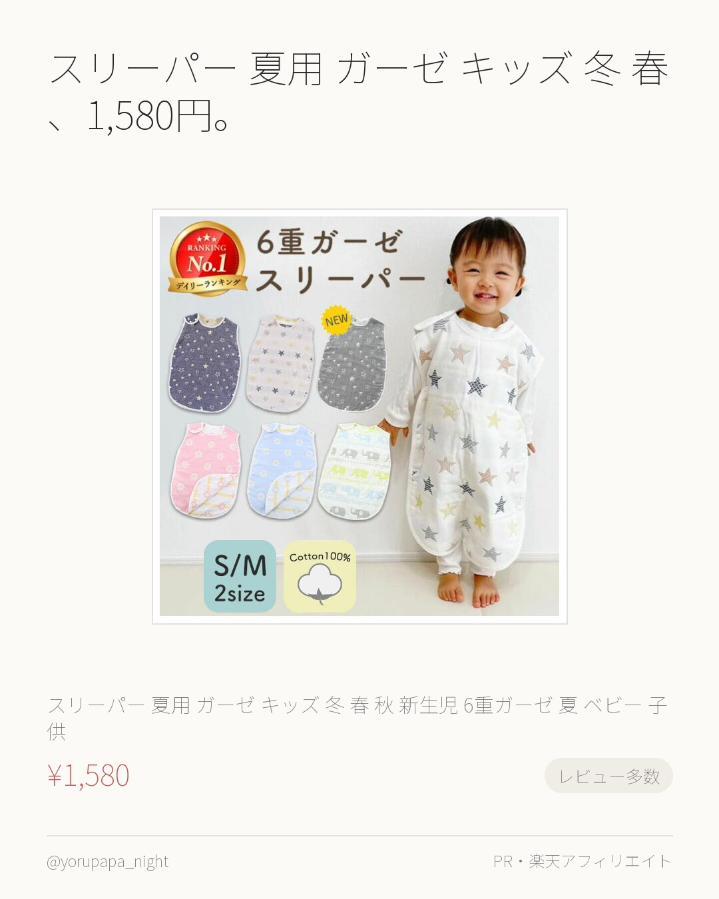
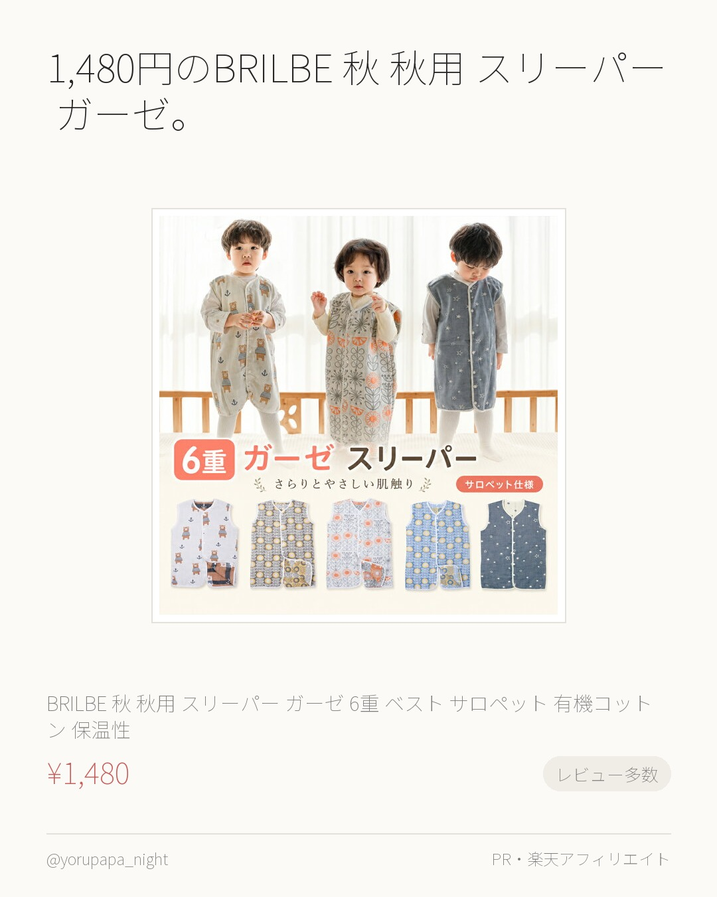
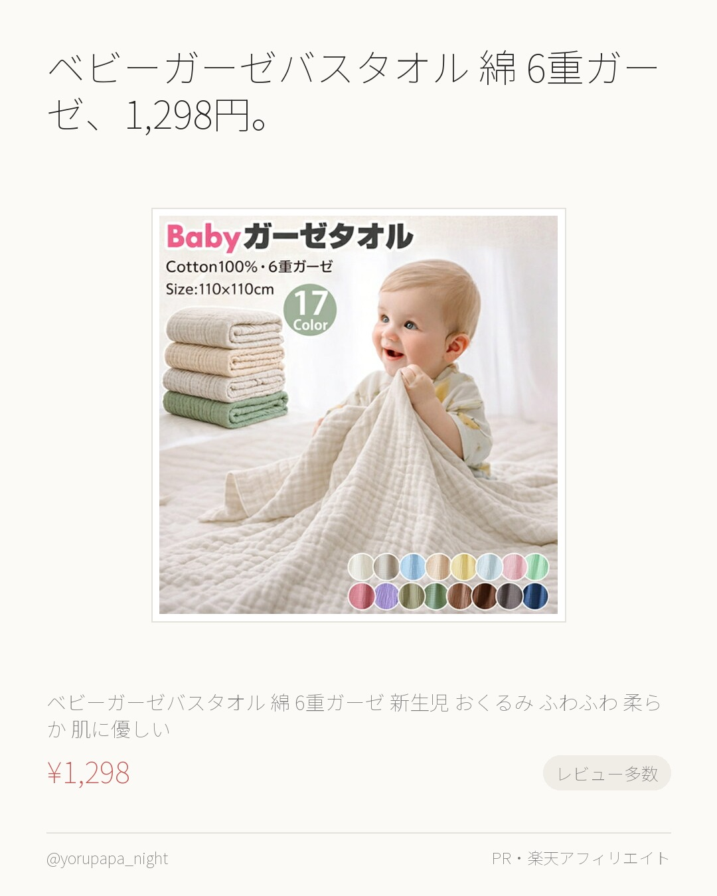
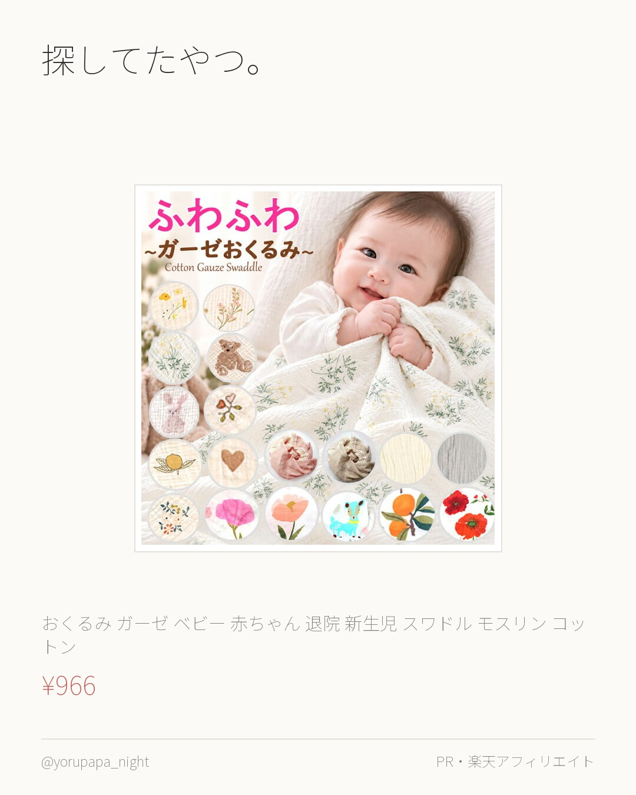
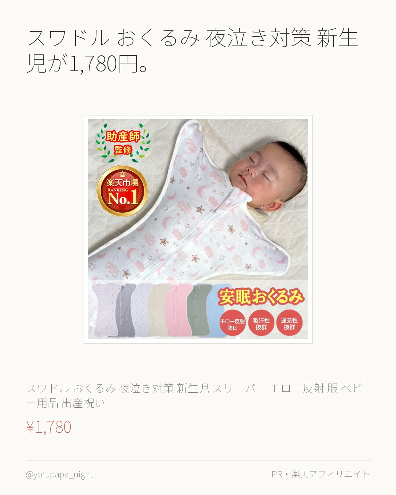
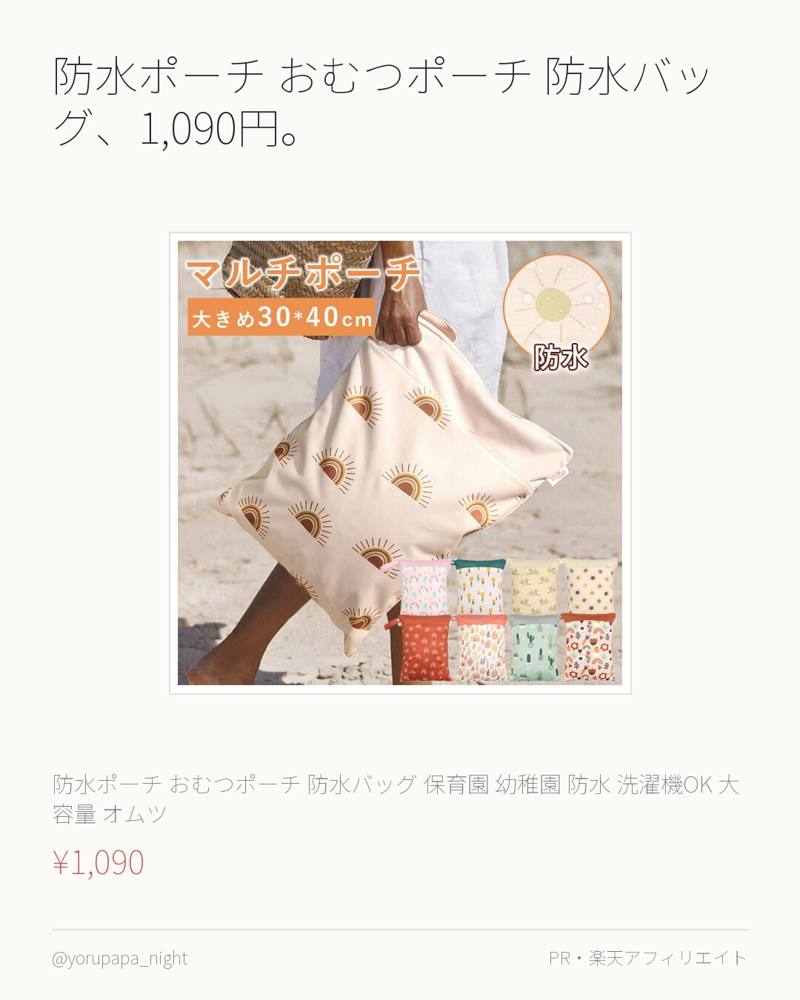
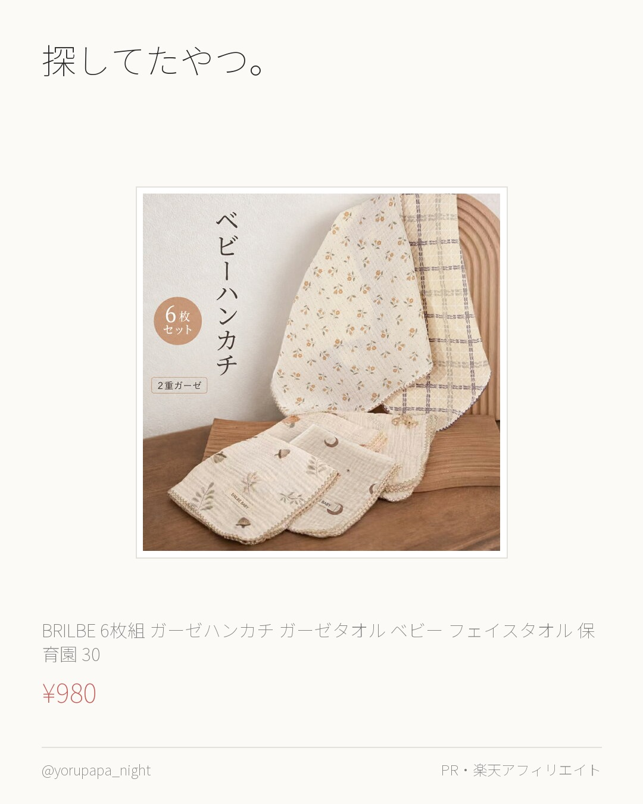
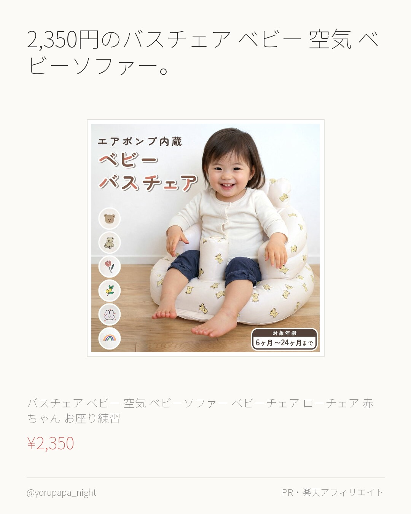
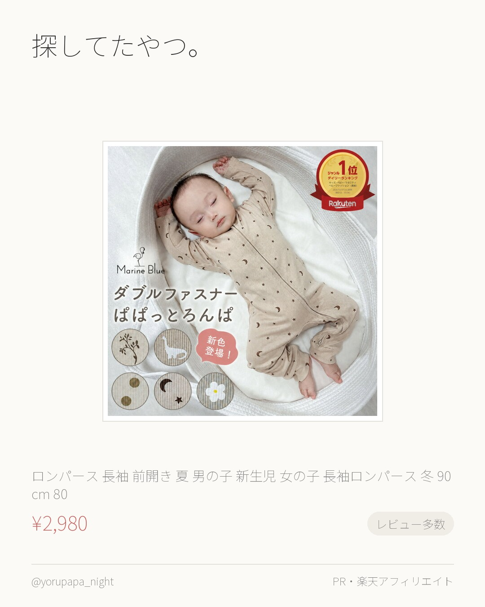
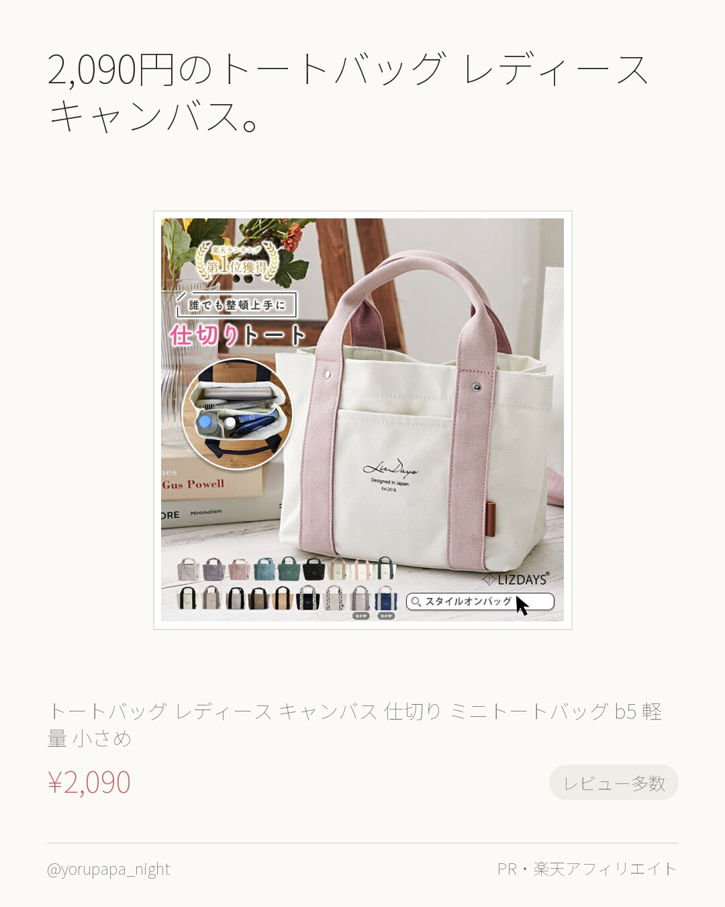

スリーパー 夏用 ガーゼ キッズ 冬 春、1,580円。レビュー1,430件で4.52なのが決め手でした。迷ってるならまずこれから。
スリーパー 夏用 ガーゼ キッズ 冬 春 秋 新生児 6重ガーゼ 夏 ベビー 子供 赤ちゃん 6重 通気性抜群 ベスト 柔らかい お昼寝 お
¥1,580
楽天市場で見るよるぱぱ｜日中は会社員、夜と休日は育児担当。実際に使ったものだけ。
これまでの投稿をぜんぶ見る → 楽天ROOM／よるぱぱ
スリーパー 夏用 ガーゼ キッズ 冬 春、1,580円。レビュー1,430件で4.52なのが決め手でした。迷ってるならまずこれから。
スリーパー 夏用 ガーゼ キッズ 冬 春 秋 新生児 6重ガーゼ 夏 ベビー 子供 赤ちゃん 6重 通気性抜群 ベスト 柔らかい お昼寝 お
¥1,580
楽天市場で見る
1,480円のBRILBE 秋 秋用 スリーパー ガーゼ。レビュー1,458件で4.51なのが決め手でした。気になってた人はぜひ。
BRILBE 秋 秋用 スリーパー ガーゼ 6重 ベスト サロペット 有機コットン 保温性 通気性抜群 柔らかく お昼寝 ベビー バス おく
¥1,480
楽天市場で見る
ベビーガーゼバスタオル 綿 6重ガーゼ、1,298円。レビュー1,075件で4.46なのが決め手でした。使い回しが効きそう。
【＼ハンドタオル付き／好きなカラーを選べる 17color】ベビーガーゼバスタオル 綿100％ 6重ガーゼ 新生児 おくるみ ふわふわ 柔ら
¥1,298
楽天市場で見る
探してたやつ。おくるみ ガーゼ ベビー 赤ちゃん 退院。レビュー537件で4.51なのが決め手でした。使い回しが効きそう。
おくるみ ガーゼ ベビー 赤ちゃん 退院 新生児 スワドル モスリン コットン タオルケット 夏用 春 夏 秋 冬 2重 ガーゼケット 綿
¥966
楽天市場で見る
スワドル おくるみ 夜泣き対策 新生児が1,780円。レビュー590件で4.49なのが決め手でした。迷ってるならまずこれから。
【助産師監修×ベビモこどもに掲載】＼楽天1位／スワドル おくるみ 夜泣き対策 新生児 スリーパー モロー反射 服 ベビー用品 出産祝い 赤ち
¥1,780
楽天市場で見る
防水ポーチ おむつポーチ 防水バッグ、1,090円。レビュー4.57（348件）なのが決め手でした。迷ってるならまずこれから。
＼★2点目半額★／防水ポーチ おむつポーチ 防水バッグ 保育園 幼稚園 防水 洗濯機OK 大容量 オムツ 着替え入れ おむつバッグ 持ち運び
¥1,090
楽天市場で見る
探してたやつ。BRILBE 6枚組 ガーゼハンカチ。レビュー668件で4.53なのが決め手でした。迷ってるならまずこれから。
BRILBE 6枚組 【2重ガーゼ】 ガーゼハンカチ ガーゼタオル ベビー フェイスタオル 保育園 30 × 30cm 綿100% 入園準備
¥980
楽天市場で見る
2,350円のバスチェア ベビー 空気 ベビーソファー。レビュー4.62（213件）なのが決め手でした。使い回しが効きそう。
バスチェア ベビー 空気 ベビーソファー ベビーチェア ローチェア 赤ちゃん お座り練習 持ち運び 椅子 お風呂 ソファ ベビーソファ イス
¥2,350
楽天市場で見る
探してたやつ。ロンパース 長袖 前開き 夏 男の子。レビュー1,012件で4.46なのが決め手でした。使い回しが効きそう。
ロンパース 長袖 前開き 夏 男の子 新生児 女の子 長袖ロンパース 冬 90cm 80 ベビー 秋冬 ベビー服 100cm 90 肌着 ロ
¥2,980
楽天市場で見る
2,090円のトートバッグ レディース キャンバス。レビュー3,609件で4.45なのが決め手でした。色違いも見てみてください。
【楽天1位】【映画・ドラマ使用】トートバッグ レディース キャンバス 仕切り ミニトートバッグ b5 軽量 小さめ おしゃれ かわいい ラン
¥2,090
楽天市場で見る